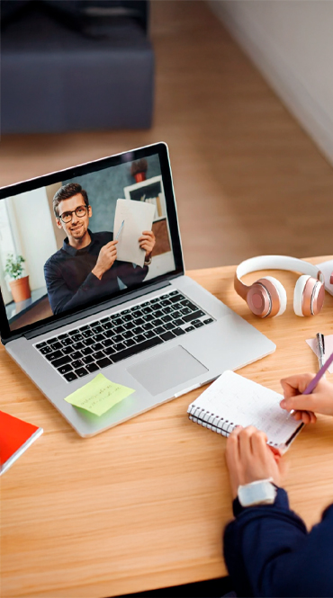

Organiza tu aprendizaje
Planificación digital
Usa herramientas que te ayudan a estructurar tus tareas, tiempos y objetivos de forma eficiente.

Comprende mejor los temas
Recursos interactivos
Accede a contenidos visuales y dinámicos que facilitan la comprensión de conceptos complejos.

Estudia desde cualquier lugar
Acceso multiplataforma
Conéctate desde tu celular, tablet o computadora y mantén tu ritmo de estudio sin interrupciones.

Colabora con otros estudiantes
Comunicación digital
Comparte ideas, trabaja en equipo y participa en proyectos usando plataformas colaborativas.

Encuentra información confiable
Búsqueda inteligente
Aprende a identificar fuentes seguras y útiles para tus trabajos y exposiciones.

Mejora tu enfoque y resultados
Tecnología con propósito
Utiliza aplicaciones que te ayudan a concentrarte, organizarte y avanzar con claridad.